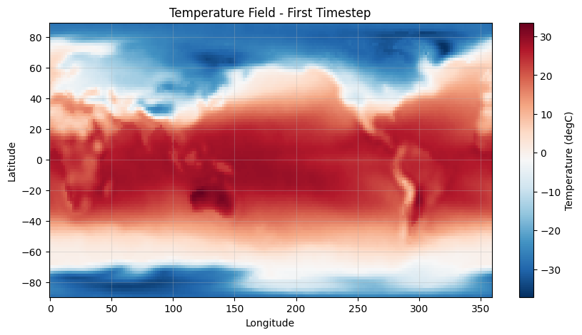

Getting Started with CDO#
Climate Data Operators (CDO)#
CDO is a powerful command-line tool for manipulating and analyzing climate and forecast data. It supports NetCDF, GRIB, and other scientific data formats. This notebook introduces the basics of CDO and demonstrates how to use it from within Python.
Learning Objectives:#
Understand what CDO is and what it can do
Learn how to run CDO commands from Python
Create and inspect NetCDF datasets
Perform basic data operations with CDO
import os
import subprocess
import xarray as xr
import numpy as np
import matplotlib.pyplot as plt
# CDO is installed as cdo.cmd on Windows; use the right executable name.
CDO = 'cdo.cmd' if os.name == 'nt' else 'cdo'
# Check CDO version
result = subprocess.run([CDO, '--version'], capture_output=True, text=True)
print(result.stdout)
if result.stderr:
print('STDERR:', result.stderr[:500])
Climate Data Operators version 2.6.0 (https://mpimet.mpg.de/cdo)
System: x86_64-w64-mingw32
CXX Compiler: g++ -D_USE_MATH_DEFINES -O2 -std=c++20 -Wno-template-body -I/mingw64/include -fopenmp -pthread
CXX version : g++.exe (Rev14, Built by MSYS2 project) 15.2.0
CXX library :
C Compiler: gcc -O2 -I/mingw64/include -fopenmp -pthread -pthread
C version : gcc.exe (Rev14, Built by MSYS2 project) 15.2.0
F77 Compiler: gfortran -g -O2
F77 version : GNU Fortran (Rev14, Built by MSYS2 project) 15.2.0
Features: 15GB 8threads c++20 OpenMP45 pthreads HDF5 NC4/HDF5 dap sz udunits2 proj fftw3 sse3
Libraries: yac/3.13.1 NetCDF/4.9.3 HDF5/2.1.1 proj/9.8.0
CDI data types: SizeType=size_t
CDI file types: srv ext ieg grb1 grb2 nc1 nc2 nc4 nc4c nc5 nczarr
CDI library version : 2.6.0
cgribex library version : 2.3.1
ecCodes library version : 2.45.0
NetCDF library version : 4.9.3 of Dec 14 2025 17:39:55 $
exse library version : 2.0.0
FILE library version : 1.9.1
# Run cdo --help and parse the output
result = subprocess.run([CDO, '--help'], capture_output=True, text=True)
help_text = result.stdout + result.stderr
# Parse and display key sections
lines = help_text.split('\n')
print(f'Total lines of help output: {len(lines)}')
print()
print('=== OPERATOR CATEGORIES ===')
for i, line in enumerate(lines):
line_stripped = line.strip()
if line_stripped.startswith('-') and len(line_stripped) > 5:
continue
if line_stripped and not line_stripped.startswith(' '):
print(line)
if 'NAME' in line and 'SYNOPSIS' in help_text:
break
Total lines of help output: 35
=== OPERATOR CATEGORIES ===
skyborn-cdo: Pre-compiled CDO (Climate Data Operators) for Python
Usage:
skyborn-cdo --info Show CDO binary info and version
cdo --info Windows-only alias for skyborn-cdo
cdo-win --info Windows-only alias for skyborn-cdo
skyborn-cdo --help Show this help message
skyborn-cdo -h <operator> Show help for a specific CDO operator
skyborn-cdo <operator> --help Show help for a specific CDO operator
skyborn-cdo --operators List all available CDO operators
skyborn-cdo <cdo-args> Pass arguments directly to CDO
Operator Help Examples:
skyborn-cdo -h sellonlatbox Show help for sellonlatbox
skyborn-cdo -h mergetime Show help for mergetime
skyborn-cdo mergetime --help Alternate operator help syntax
skyborn-cdo -h remapbil Show help for remapbil
Command Examples:
skyborn-cdo -O mergetime in1.nc in2.nc out.nc
skyborn-cdo -O -f nc4 sellonlatbox,0,30,0,30 input.nc output.nc
skyborn-cdo -O -f nc4 -fldmean -sellonlatbox,70,140,10,55 input.nc output.nc
cdo -O sellonlatbox,70,140,15,55 input.nc output.nc
cdo-win -O sellonlatbox,70,140,15,55 input.nc output.nc
Python API:
from skyborn_cdo import Cdo
cdo = Cdo(options="-O")
cdo("mergetime in1.nc in2.nc out.nc")
cdo.mergetime(input="in1.nc in2.nc", output="out.nc")
print(cdo.help("sellonlatbox")) # operator help in Python
Windows:
Set SKYBORN_CDO_TIMEOUT=<seconds> to raise the default safeguard limit
CDO Operators#
CDO provides hundreds of operators organized into categories:
Category |
Description |
Examples |
|---|---|---|
File information |
Inspect dataset metadata |
|
Selection |
Select time steps, levels, variables |
|
Statistics |
Compute statistical values |
|
Arithmetic |
Arithmetic operations on fields |
|
Grid transformation |
Remap to different grids |
|
Temporal |
Temporal aggregation |
|
The general syntax is: cdo [options] OPERATOR input_file output_file
# Use real NCEP/DOE Reanalysis-2 monthly temperature data
import os
data_dir = '../data'
os.makedirs(data_dir, exist_ok=True)
real_file = os.path.join('..', 'datasets', 'tas_sample.nc')
ds_real = xr.open_dataset(real_file)
# Select one full year and use the variable name expected below
ds = ds_real.sel(time=slice('2000-01-01', '2000-12-31')).rename({'tas': 'temperature'})
ds['temperature'] = ds['temperature'] - 273.15 # K -> degC
ds.attrs = {
'title': 'Real NCEP/DOE Reanalysis-2 surface air temperature',
'source': 'NCEP/DOE AMIP-II Reanalysis (Reanalysis-2)',
}
file_path = os.path.join(data_dir, 'real_temp.nc')
ds.to_netcdf(file_path)
print(f'Using real dataset: {real_file}')
print(f'Saved working copy: {file_path}')
print(ds)
C:\Users\birhe\AppData\Roaming\Python\Python312\site-packages\xarray\backends\plugins.py:110: RuntimeWarning: Engine 'xrspatial' loading failed:
Numba needs NumPy 2.4 or less. Got NumPy 2.5.
external_backend_entrypoints = backends_dict_from_pkg(entrypoints_unique)
Using real dataset: ..\datasets\tas_sample.nc
Saved working copy: ../data\real_temp.nc
<xarray.Dataset> Size: 869kB
Dimensions: (time: 12, lat: 94, lon: 192)
Coordinates:
* time (time) datetime64[ns] 96B 2000-01-01 2000-02-01 ... 2000-12-01
* lat (lat) float64 752B 88.54 86.65 84.75 ... -84.75 -86.65 -88.54
* lon (lon) float64 2kB 0.0 1.875 3.75 5.625 ... 354.4 356.2 358.1
Data variables:
temperature (time, lat, lon) float32 866kB -27.8 -27.83 ... -26.86 -26.88
Attributes:
title: Real NCEP/DOE Reanalysis-2 surface air temperature
source: NCEP/DOE AMIP-II Reanalysis (Reanalysis-2)
# Use cdo sinfo to inspect the dataset
result = subprocess.run([CDO, 'sinfo', file_path], capture_output=True, text=True)
print('=== CDO sinfo output ===')
print(result.stdout)
if result.stderr:
print('=== STDERR ===')
print(result.stderr)
=== CDO sinfo output ===
File format : NetCDF4
-1 : Institut Source T Steptype Levels Num Points Num Dtype : Parameter ID
1 : unknown NCEP/DOE v instant 1 1 18048 1 F32 : -1
Grid coordinates :
1 : gaussian : points=18048 (192x94) F47
lon : 0 to 358.125 by 1.875 [degrees_east] cyclic
lat : 88.542 to -88.542 [degrees_north]
Vertical coordinates :
1 : surface : levels=1
Time coordinate :
time : 12 steps
RefTime = 1980-01-01 00:00:00 Units = days Calendar = proleptic_gregorian
YYYY-MM-DD hh:mm:ss YYYY-MM-DD hh:mm:ss YYYY-MM-DD hh:mm:ss YYYY-MM-DD hh:mm:ss
2000-01-01 00:00:00 2000-02-01 00:00:00 2000-03-01 00:00:00 2000-04-01 00:00:00
2000-05-01 00:00:00 2000-06-01 00:00:00 2000-07-01 00:00:00 2000-08-01 00:00:00
2000-09-01 00:00:00 2000-10-01 00:00:00 2000-11-01 00:00:00 2000-12-01 00:00:00
Exercises#
Use
cdo ncdumpto view the header of the real NCEP/DOE Reanalysis-2 dataset (../datasets/tas_sample.nc)Use
cdo griddesto get the grid descriptionCompute the global mean temperature using
cdo fldmeanand thencdo timmeanSelect a single timestep using
cdo seltimestepExplore the real precipitation dataset (../datasets/pr_sample.nc) and inspect its variables
# Exercise 3: Compute global mean temperature
os.makedirs('../output', exist_ok=True)
# Step 1: Compute field mean (spatial average)
subprocess.run([CDO, 'fldmean', file_path, '../output/fldmean.nc'], capture_output=True, text=True)
# Step 2: Compute time mean (temporal average)
subprocess.run([CDO, 'timmean', '../output/fldmean.nc', '../output/global_mean_temp.nc'], capture_output=True, text=True)
# Read and display the result
ds_mean = xr.open_dataset('../output/global_mean_temp.nc')
print('Global mean temperature:')
print(ds_mean)
print(f'\nMean temperature: {ds_mean.temperature.values.ravel()[0]:.2f} degC')
Global mean temperature:
<xarray.Dataset> Size: 44B
Dimensions: (time: 1, bnds: 2, lon: 1, lat: 1)
Coordinates:
* time (time) datetime64[ns] 8B 2000-06-16
* lon (lon) float64 8B 0.0
* lat (lat) float64 8B 0.0
Dimensions without coordinates: bnds
Data variables:
time_bnds (time, bnds) datetime64[ns] 16B ...
temperature (time, lat, lon) float32 4B ...
Attributes:
CDI: Climate Data Interface version 2.6.0 (https://mpimet.mpg.de...
Conventions: CF-1.6
source: NCEP/DOE AMIP-II Reanalysis (Reanalysis-2)
title: Real NCEP/DOE Reanalysis-2 surface air temperature
history: Sun Nov 22 18:52:44 2026: C:\Users\birhe\AppData\Roaming\Py...
CDO: Climate Data Operators version 2.6.0 (https://mpimet.mpg.de...
Mean temperature: 14.48 degC
# Exercise 4: Select a single timestep
subprocess.run([CDO, 'seltimestep,1', file_path, '../output/timestep1.nc'], capture_output=True, text=True)
ds_ts = xr.open_dataset('../output/timestep1.nc')
print('First timestep:')
print(ds_ts)
# Quick visualization
plt.figure(figsize=(10, 5))
plt.pcolormesh(ds_ts.lon, ds_ts.lat, ds_ts.temperature[0], cmap='RdBu_r', shading='auto')
plt.colorbar(label='Temperature (degC)')
plt.title('Temperature Field - First Timestep')
plt.xlabel('Longitude')
plt.ylabel('Latitude')
plt.grid(alpha=0.3)
plt.show()
First timestep:
<xarray.Dataset> Size: 74kB
Dimensions: (time: 1, lon: 192, lat: 94)
Coordinates:
* time (time) datetime64[ns] 8B 2000-01-01
* lon (lon) float64 2kB 0.0 1.875 3.75 5.625 ... 354.4 356.2 358.1
* lat (lat) float64 752B 88.54 86.65 84.75 ... -84.75 -86.65 -88.54
Data variables:
temperature (time, lat, lon) float32 72kB ...
Attributes:
CDI: Climate Data Interface version 2.6.0 (https://mpimet.mpg.de...
Conventions: CF-1.6
source: NCEP/DOE AMIP-II Reanalysis (Reanalysis-2)
title: Real NCEP/DOE Reanalysis-2 surface air temperature
history: Sun Nov 22 18:52:46 2026: C:\Users\birhe\AppData\Roaming\Py...
CDO: Climate Data Operators version 2.6.0 (https://mpimet.mpg.de...
